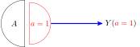

# For slides
library(ggplot2)
cbPalette <- c("#E69F00", "#56B4E9", "#009E73", "#F0E442", "#0072B2", "#D55E00", "#CC79A7")
options(ggplot2.discrete.colour = cbPalette)
# Theme generator, for given sizes
theme_dsan <- function(plot_type = "full") {
if (plot_type == "full") {
custom_base_size <- 16
} else if (plot_type == "half") {
custom_base_size <- 22
} else if (plot_type == "quarter") {
custom_base_size <- 28
} else {
# plot_type == "col"
custom_base_size <- 22
}
theme <- theme_classic(base_size = custom_base_size) +
theme(
plot.title = element_text(hjust = 0.5),
plot.subtitle = element_text(hjust = 0.5),
legend.title = element_text(hjust = 0.5),
legend.box.background = element_rect(colour = "black")
)
return(theme)
}
knitr::opts_chunk$set(fig.align = "center")
g_pointsize <- 5
g_linesize <- 1
# Technically it should always be linewidth
g_linewidth <- 1
g_textsize <- 14
remove_legend_title <- function() {
return(theme(
legend.title = element_blank(),
legend.spacing.y = unit(0, "mm")
))
}Week 6: Context-Sensitive Fairness
DSAN 5450: Data Ethics and Policy
Spring 2026, Georgetown University
Wednesday, February 18, 2026
Achieving “Fair Misclassification”

- If you think fairness = equal misclassification rates between racial groups, üëç
- If you think fairness = equal correct prediction rates between racial groups, üëé
Achieving “Fair Calibration”

- If you think fairness = equal misclassification rates between racial groups, üëç
- If you think fairness = equal correct prediction rates between racial groups, üëé
Impossibility Results!
- Let’s see what happens if we try to reason about definitions/meaning in language without the ability to incorporate “context” (here defined in a silly way… point holds as we go up the “language complexity hierarchy”)
- Try to write a finite-state automata to detect “valid” strings in the language \(\{a^nb^n \mid n \in \mathbb{Z}^{\geq 0}\}\):
aabb✅,aba‚ùå

(There is a Solution! Outside Scope of Class…)

The (Normative!) Antecedent
- Not well-liked in industry / policy because you can’t just “plug in” results of your classifier and get True/False “we satisfied fairness!” …But this is exactly the point!

Remember Distance Metrics?(!)
- A core element in both similarity-based and causal fairness!
- Already difficult to choose a metric on pragmatic grounds (ambulance needs to get to hospital)
- Now people will also have fundamental normative disagreements about what should and should not determine difference

Equality of Opportunity
- This notion (last bullet of the previous slide) is contentious, to say the least
- But also, crucially: our job is not to decide the similarity metric unilaterally!
- The equality of opportunity approach is not itself a similarity metric!
- It is a “meta-algorithm” for translating normative positions (consequents of an ethical framework) into concrete fairness constraints that you can then impose on ML algorithms

At a Macro Level!

What Is To Be Done?

Selecting on the Dependent Variable

- Jeff’s rant: If you care about actually solving social issues, this should infuriate you
DGPs and the Emergence of Order
- Who can guess the state of this process after 10 steps, with 1 person?
- 10 people? 50? 100? (If they find themselves on the same spot, they stand on each other’s heads)
- 100 steps? 1000?

“Mathematical/Scientific Modeling”
- Thing we observe (poking out of water): data
- Hidden but possibly discoverable through deeper investigation (ecosystem under surface): model / DGP

The Intuitive But Boring Problem of Causal Inference
library(dplyr)
library(ggplot2)
ga_lawyers <- c(21362, 22254, 23134, 23698, 24367, 24930, 25632, 26459, 27227, 27457)
ski_df <- tibble::tribble(
~year, ~varname, ~value,
2000, "ski_revenue", 1551,
2001, "ski_revenue", 1635,
2002, "ski_revenue", 1801,
2003, "ski_revenue", 1827,
2004, "ski_revenue", 1956,
2005, "ski_revenue", 1989,
2006, "ski_revenue", 2178,
2007, "ski_revenue", 2257,
2008, "ski_revenue", 2476,
2009, "ski_revenue", 2438,
)
ski_mean <- mean(ski_df$value)
ski_sd <- sd(ski_df$value)
ski_df <- ski_df %>% mutate(val_scaled = 12*value, val_norm = (value - ski_mean)/ski_sd)
law_df <- tibble::tibble(year=2000:2009, varname="ga_lawyers", value=ga_lawyers)
law_mean <- mean(law_df$value)
law_sd <- sd(law_df$value)
law_df <- law_df %>% mutate(val_norm = (value - law_mean)/law_sd)
spur_df <- dplyr::bind_rows(ski_df, law_df)
ggplot(spur_df, aes(x=year, y=val_norm, color=factor(varname, labels = c("Ski Revenue","Lawyers in Georgia")))) +
stat_smooth(method="loess", se=FALSE) +
geom_point(size=g_pointsize/1.5) +
labs(
fill="",
title="Ski Revenue vs. Georgia Lawyers",
x="Year",
color="Correlation: 99.2%",
linetype=NULL
) +
theme_dsan() +
scale_x_continuous(
breaks=seq(from=2000, to=2014, by=2)
) +
#scale_y_continuous(
# name="Total Revenue, Ski Facilities (Million USD)",
# sec.axis = sec_axis(~ . * law_sd + law_mean, name = "Number of Lawyers in Georgia")
#) +
scale_y_continuous(breaks = -1:1,
labels = ~ . * round(ski_sd,1) + round(ski_mean,1),
name="Total Revenue, Ski Facilities (Million USD)",
sec.axis = sec_axis(~ . * law_sd + law_mean, name = "Number of Lawyers in Georgia")) +
expand_limits(x=2010) +
#geom_hline(aes(yintercept=x, color="Mean Values"), as.data.frame(list(x=0)), linewidth=0.75, alpha=1.0, show.legend = TRUE) +
scale_color_manual(
breaks=c('Ski Revenue', 'Lawyers in Georgia'),
values=c('Ski Revenue'=cbPalette[1], 'Lawyers in Georgia'=cbPalette[2])
)
(Based on Spurious Correlations, Tyler Vigen)
- This, however, is only a mini-boss. Beyond it lies the truly invincible FINAL BOSS‚Ķ üôÄ
What Is To Be Done?
Selecting on the Dependent Variable
- Jeff‚Äôs ABHYSIOWDCI claim: If we care about intervening to reduce social ills, this literally has negative value (Goes up to zero value if you don‚Äôt publish it though! üòâ)
(Annoying But Hopefully You’ll See the Importance Once We Digest Causal Inference… a standard term in The Sciences)
Chalkboard Time…
- \(\Pr(Y = 1) = \; ?\)
- \(\Pr(Y = 1 \mid E = 1) = \; ?\)

The Problem of Colliders
- \(X\) and \(Y\) are diseases which occur independently, no interrelationship, with probability \(1/3\)
- Either \(X\) or \(Y\) sufficient for admission to hospital, \(Z\)
- We have: \(X \rightarrow Z \leftarrow Y\) [üö® Collider alert!]

The Final Diagrammatic Boss: SWIGs
- Single World Intervention Graphs

